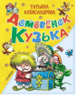

Домовенок Кузька

Девочке Наташе повезло: у неё есть настоящий друг, сообразительный и очень добрый, который старается всем помогать. А ещё с ним всегда интересно и весело, он готов играть без конца. Зовут его Кузька. Он — домовёнок. Сказочница Татьяна Ивановна Александрова (1929-1983) рассказала о нём в историях, полных забавных приключений и настоящих сказочных чудес «Кузька в новом доме», «Кузька в лесу» и «Кузька у Бабы-Яги». Татьяна Александрова была ещё и художником-мультипликатором, поэтому она и нарисовала Кузьку. Домовёнок Кузька оказался таким симпатичным, что на студии кукольных мультипликационных фильмов сняли целый цикл мультфильмов о забавном непоседливом Кузьке. Нашу книгу проиллюстрировал другой замечательный художник-мультипликатор — Анатолий Михайлович Савченко, придумавший Карлсона, Вовку из Тридевятого царства и многих других героев. Домовёнок Кузька и другие персонажи из книги у нег